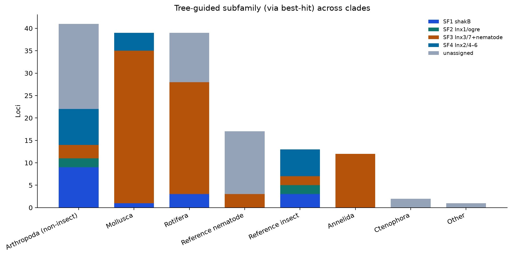
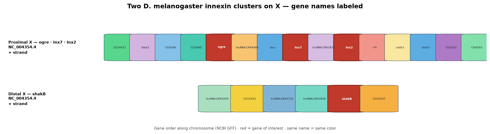
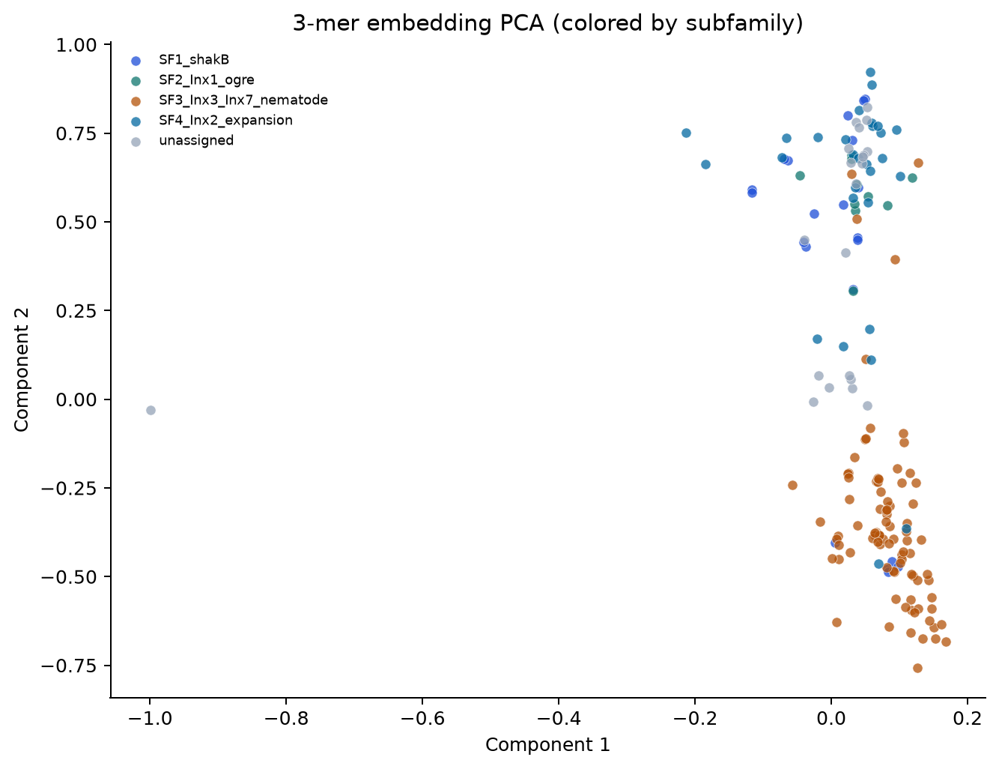
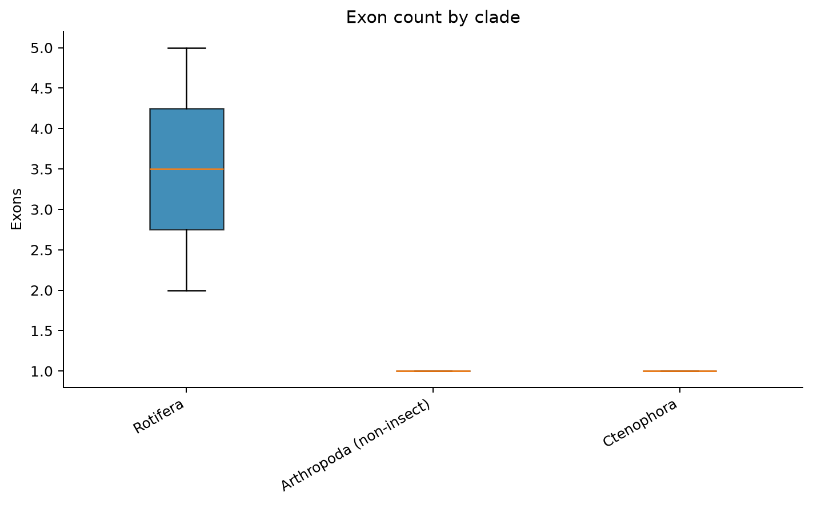

Gene names are not phylogeny.
Outside insects, recovered innexins behave like the SF3 / nematode-like radiation (Inx3–Inx7–unc-7/9),
not like a full Drosophila Inx1–7 toolkit.
At the protein level, tree-guided subfamilies are sequence-separable
(~46% within vs ~28% between identity; embeddings agree). Amino-acid composition barely separates them.
In Drosophila, genomic clusters also do not match the phylogenetic subfamilies one-to-one.
Phylogeny across clades
The tree cuts across animal groups
If every clade reinvented “Inx1–7 + shakB”, we would see those labels evenly everywhere.
Instead, non-insect recoveries pile into SF3-like / unc-7–unc-9 best hits — matching the innexin tree hypothesis.

Tree-guided subfamilies (SF1–SF4) mapped onto taxonomic clades via best-hit labels.
Note: SF3 dominates outside insects; classical insect SF1/SF2/SF4 diversity does not replay one-for-one in rotifers, molluscs or spiders.
Which reference proteins do loci in each clade most resemble?
Note: Molluscs / rotifers / annelids lean unc-7 and unc-9. That is phylogenetic signal, not proof that their genes “are” nematode unc-9 orthologs.
Sequence distance
Identity falls with evolutionary distance — without leaving the family
Closer arthropods keep higher best-hit identity; soft-bodied / early-branching recoveries sit lower (~35–40%) but remain long, cysteine-rich innexin-like products.
Best-hit identity (%) for discovery + curator loci, split by clade.
Note: Lower identity in rotifers/molluscs is expected divergence, not “noise”. Non-insect arthropods sit higher — consistent with closer affinity to insect references.
Gene structure
Genomic neighbourhood and phylogeny tell different stories
In Drosophila, two X clusters plus Inx3 on 3R organise the genes in space.
The tree regroups them: Inx7 sits with nematodes (SF3) even though it is genomically next to ogre/Inx2.
D. melanogaster Inx2 and C. elegans inx-2 share a numerical suffix from
historical screens, but they are not orthologs —
nematode inx-2 groups in SF3 with Dmel Inx3 / Inx7 (and unc-7 / unc-9), while insect Inx2 sits in SF4.
Compare SF3 ↔ nematode innexins with the tree and synteny, not by matching names.

Named Drosophila intervals — proximal X, distal X, and Inx3 on 3R.
Note: Genomic clustering ≠ subfamily membership. Synteny alone would mis-group Inx7 with SF2/SF4 neighbours.
Tree-guided comparison: Drosophila Inx3/Inx7 neighbourhoods versus nematode innexins as a group — not “Inx2 vs inx-2”.
Note: The useful synteny question is SF3 ↔ nematodes.
Pairing insect Inx2 with nematode inx-2 because they share a name is the trap this plot is meant to avoid.
Full panel: SF3 vs nematodes.
Protein similarity
Subfamilies separate in sequence space and in embeddings
MMseqs2 and 3-mer embeddings agree: proteins within a tree subfamily are more alike than proteins from different subfamilies —
especially SF3 (nematode-like) versus SF4 (insect Inx2/4–6 expansion).
Mean MMseqs2 % identity between tree-guided subfamilies.
Note: Within-subfamily ~46% vs between ~28%. SF3↔SF4 ~28% — two different evolutionary experiments inside one protein family.
3-mer SVD embedding cosine (same-group mean ~0.28 vs different-group ~0.05).
Note: Local sequence “texture” separates groups even when global AA composition does not — a structural-biochemistry hint that motif grammar differs by subfamily.

Proteins in 3-mer embedding space, coloured by subfamily.
Note: SF clouds are partially overlapping (still one family) but not random — phylogeny leaves a footprint in protein feature space.
Gene & protein architecture
Length and exon patterns stay innexin-like across clades
Despite identity drop outside insects, protein lengths remain in a coherent band.
Exon counts (where annotated) are higher and lineage-variable (panel median ~5):
innexin genes typically keep introns inside the coding region, which allows multiple splice variants from a single locus
(e.g. insect shakB) — unlike the usually intron-free connexin ORF.
Protein length distributions by clade (reference + recovered loci).
Note: Rotifers/molluscs (~370 aa) look length-normal; nematode references trend longer (~420 aa). Structure-length is conserved more than sequence identity.

Exon counts by clade where gene models report exons.
Note: Multi-exon, splice-capable gene structure varies by lineage — another reason orthology should follow the tree, not the name.
Flat median = 1 exon in Ctenophora / non-insect Arthropoda is often a TSA / ab initio model (continuous ORF as one exon), not evidence that those innexins lack coding-region introns.
Summary
Innexins diversified by clade-specific duplication: Drosophila holds several phylogenetic subfamilies whose proteins remain separable by identity and embeddings,
while newly recovered non-insect innexins mostly join the SF3 / nematode-like radiation — shared gene names understate the tree structure.